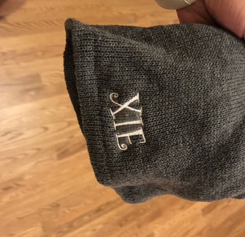
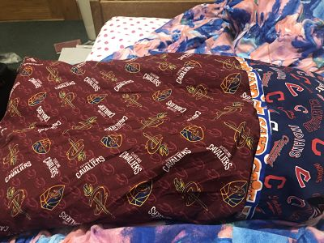

Embroider a hat!
We embroidered hats with letters of our own choice. To embroider, we used two backings for the hat. Backings support the material during the stress of sewing. We used one soft backing and one hard backing. After sticking the hat and backing together, I entered my last name to the embroidery machine.
Sew a Pillowcase!
We used the Burrito method for our pillowcase (yum!). I used three seams- a large rectangular one, a smaller rectangular one, and a thin and long one. I first pinned the two edges of the large seam and sewed the edge along the pin with the sewing machine. I repeated the same process for the two smaller seams. The reason that this method was called the burrito method was because I had to wrap it around , pin it, and sew the edges again so that the sewings themselves do not show up. I chose the cleveland sports theme as my seams. The biggest challenges of making this pillowcase is using the sewing machine. It is easy to sew but it's very hard to make the finished product look professional. I had to sew very slow so that it goes straight. I'm using the pillow right now! Below is a picture of my pillow on my bed!
